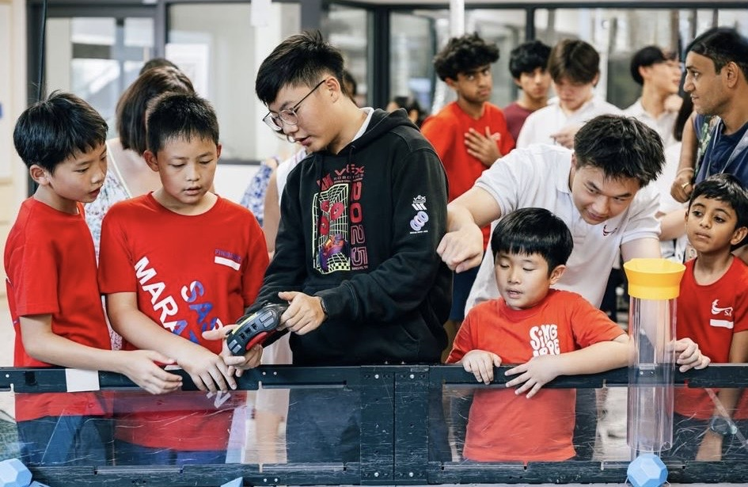
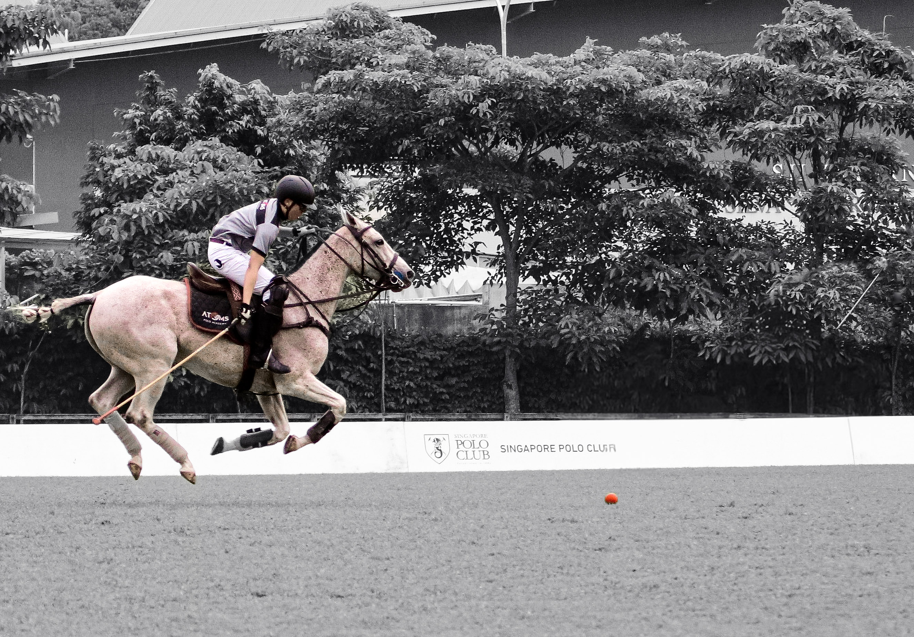
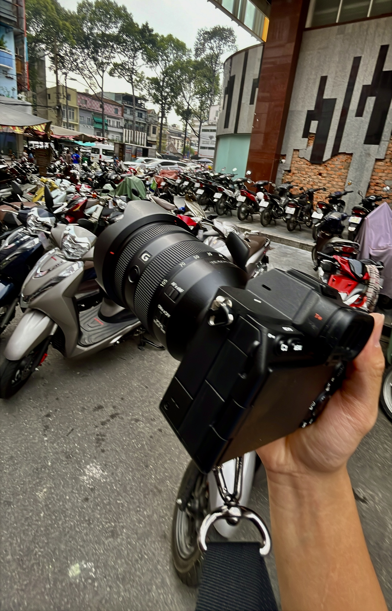

Tyler Yi
Engineer, mentor, and athlete with a love for clean mechanics and cinematic storytelling.
Robotics Captain, Engineer, Athlete
designing with precision, leading with heart
Lead Mechanical Engineer for VEX Team 6546, dedicated mentor, and competitive polo player based in Singapore.
Engineer, mentor, and athlete with a love for clean mechanics and cinematic storytelling.
About Me
gold vision, white-line sketches, real-world execution
I lead from the front, whether that means driving design reviews, coaching younger teammates, or keeping a team focused in high-pressure competition.
My work centers around custom mechanisms, torque-aware structures, and practical systems designed to compete, survive, and improve through iteration.
Polo and photography sharpen a different part of my perspective: timing, rhythm, composition, and the confidence to move decisively.
Robotics Leadership
My portfolio is anchored by robotics: designing machines, mentoring teams, and translating complex ideas into systems that score, survive, and scale.

I help steer the program from big-picture direction to detailed mechanical execution, keeping design standards high while making sure the team moves together.
Our path to the 2025 VEX World Championship in Dallas combined iterative design, match strategy, and resilient performance under pressure.
I mentor 15+ junior members at SAS and coach at Techno Arts, translating C++ and mechanical concepts into workflows younger builders can actually use.
My VEX work focused on raising scoring performance through iteration, while FRC introduced fabrication with CNC mills and water jet cutters.
Robotics Awards
Engineering & Technical Skills
Fusion 360 design work centered on custom components and structural systems optimized for torque, weight, and repeatability.
I use C++ for robotics control and Arduino-based systems, keeping software tightly connected to hardware behavior.
Outside competition builds, I explore Grover's and Shor's algorithms in IBM Q and have worked on a waste-management game concept called The Salvagers.
Athletics
timing, trust, pressure, instinct
The same awareness I bring into competition robotics shows up on the field: reading space, committing to decisive movement, and staying composed while everything is in motion.

Polo Awards
Club & League
Photography Gallery
These images sit alongside my engineering work because photography sharpens how I see detail, framing, rhythm, and atmosphere.

Why I Photograph
I am drawn to photography because it gives me a way to capture the feeling of a place through its people, motion, textures, and everyday rhythms. The most ordinary moments often become the most meaningful when they are seen again later.
To me, documenting culture matters because photography can hold on to identity, atmosphere, and memory in a way that is immediate and honest. A single frame can keep a moment alive long after it has passed.